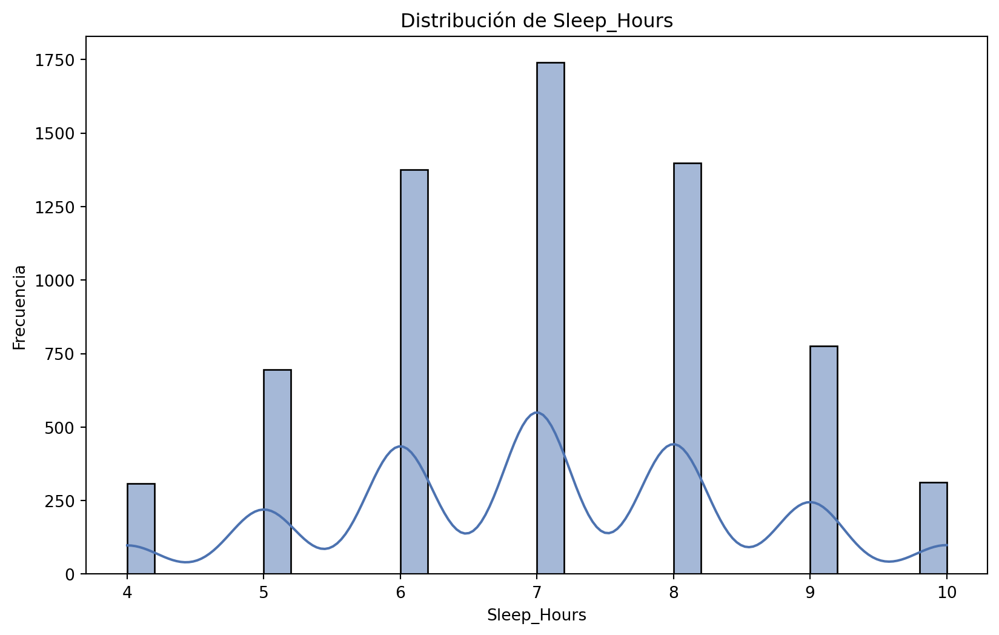
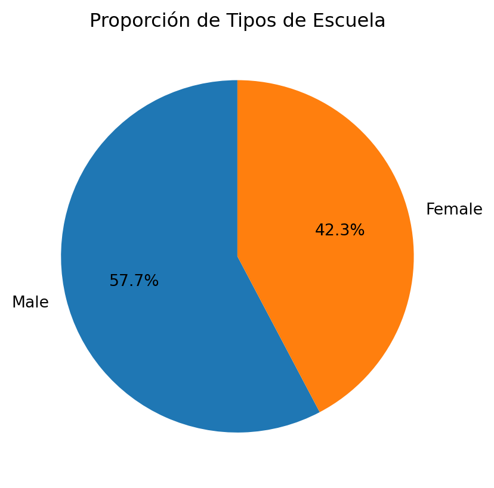
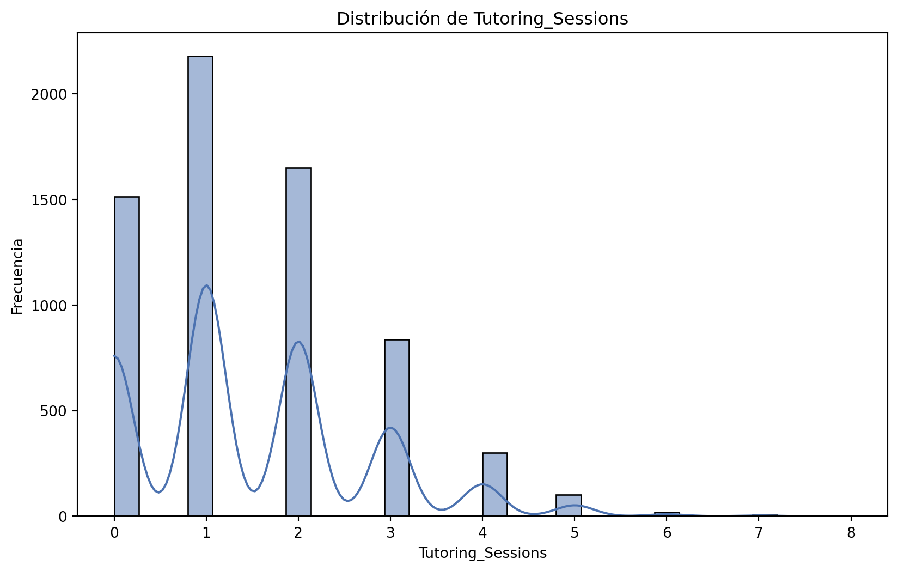
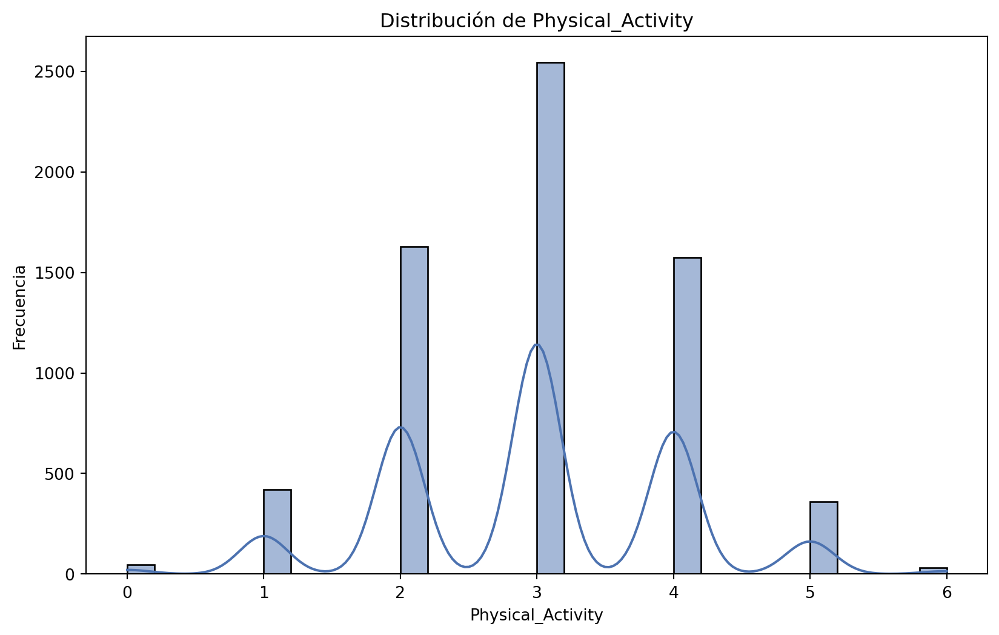
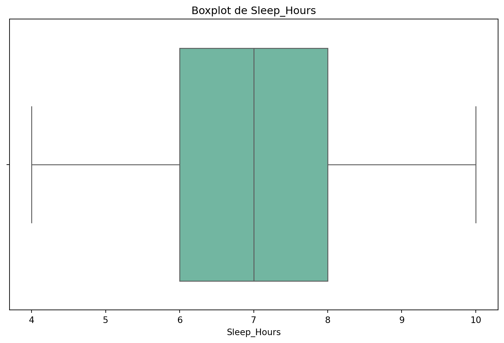
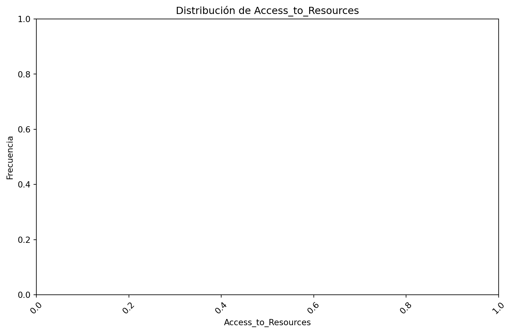
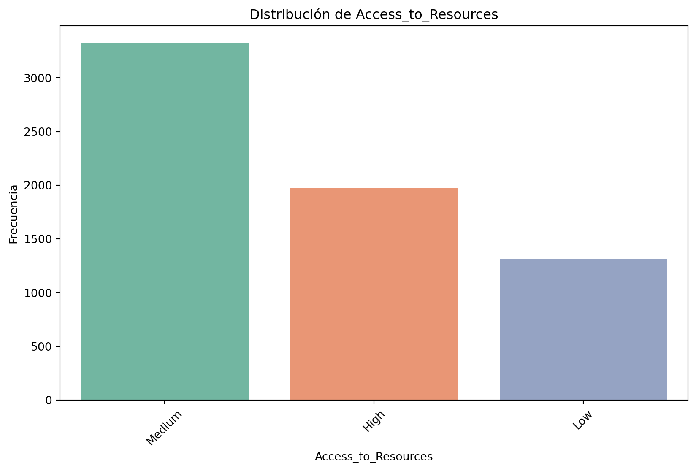

En este proyecto, analizaremos un conjunto de datos de rendiemiento de estudiantes
2. Recopilación de datos
Code
# Importación de libreríasimport pandas as pdimport matplotlib.pyplot as pltimport numpy as npimport seaborn as snsfrom sklearn.preprocessing import LabelEncoder# Carga de datosdf = pd.read_csv('data.csv', sep=",")# Resumen estadístico# Mostrar las primeras filas del datasetprint("Primeras filas del dataset:")print(df.head())# Mostrar información general del datasetprint("\nInformación del dataset:")print(df.info())# Descripción estadística básica del datasetprint("\nDescripción estadística:")print(df.describe())# Verificar si hay valores nulos en el datasetprint("\nValores nulos por columna:")print(df.isnull().sum())df.describe()info = df.shapeprint("\nLa cantidad de filas y columnas en nuestro dataframe es de:",info)tipos = df.dtypesprint("\nTipos de datos presentes en el dataset:\n",tipos)
Primeras filas del dataset:
Hours_Studied Attendance Parental_Involvement Access_to_Resources \
0 23 84 Low High
1 19 64 Low Medium
2 24 98 Medium Medium
3 29 89 Low Medium
4 19 92 Medium Medium
Extracurricular_Activities Sleep_Hours Previous_Scores Motivation_Level \
0 No 7 73 Low
1 No 8 59 Low
2 Yes 7 91 Medium
3 Yes 8 98 Medium
4 Yes 6 65 Medium
Internet_Access Tutoring_Sessions Family_Income Teacher_Quality \
0 Yes 0 Low Medium
1 Yes 2 Medium Medium
2 Yes 2 Medium Medium
3 Yes 1 Medium Medium
4 Yes 3 Medium High
School_Type Peer_Influence Physical_Activity Learning_Disabilities \
0 Public Positive 3 No
1 Public Negative 4 No
2 Public Neutral 4 No
3 Public Negative 4 No
4 Public Neutral 4 No
Parental_Education_Level Distance_from_Home Gender Exam_Score
0 High School Near Male 67
1 College Moderate Female 61
2 Postgraduate Near Male 74
3 High School Moderate Male 71
4 College Near Female 70
Información del dataset:
<class 'pandas.core.frame.DataFrame'>
RangeIndex: 6607 entries, 0 to 6606
Data columns (total 20 columns):
# Column Non-Null Count Dtype
--- ------ -------------- -----
0 Hours_Studied 6607 non-null int64
1 Attendance 6607 non-null int64
2 Parental_Involvement 6607 non-null object
3 Access_to_Resources 6607 non-null object
4 Extracurricular_Activities 6607 non-null object
5 Sleep_Hours 6607 non-null int64
6 Previous_Scores 6607 non-null int64
7 Motivation_Level 6607 non-null object
8 Internet_Access 6607 non-null object
9 Tutoring_Sessions 6607 non-null int64
10 Family_Income 6607 non-null object
11 Teacher_Quality 6529 non-null object
12 School_Type 6607 non-null object
13 Peer_Influence 6607 non-null object
14 Physical_Activity 6607 non-null int64
15 Learning_Disabilities 6607 non-null object
16 Parental_Education_Level 6517 non-null object
17 Distance_from_Home 6540 non-null object
18 Gender 6607 non-null object
19 Exam_Score 6607 non-null int64
dtypes: int64(7), object(13)
memory usage: 1.0+ MB
None
Descripción estadística:
Hours_Studied Attendance Sleep_Hours Previous_Scores \
count 6607.000000 6607.000000 6607.00000 6607.000000
mean 19.975329 79.977448 7.02906 75.070531
std 5.990594 11.547475 1.46812 14.399784
min 1.000000 60.000000 4.00000 50.000000
25% 16.000000 70.000000 6.00000 63.000000
50% 20.000000 80.000000 7.00000 75.000000
75% 24.000000 90.000000 8.00000 88.000000
max 44.000000 100.000000 10.00000 100.000000
Tutoring_Sessions Physical_Activity Exam_Score
count 6607.000000 6607.000000 6607.000000
mean 1.493719 2.967610 67.235659
std 1.230570 1.031231 3.890456
min 0.000000 0.000000 55.000000
25% 1.000000 2.000000 65.000000
50% 1.000000 3.000000 67.000000
75% 2.000000 4.000000 69.000000
max 8.000000 6.000000 101.000000
Valores nulos por columna:
Hours_Studied 0
Attendance 0
Parental_Involvement 0
Access_to_Resources 0
Extracurricular_Activities 0
Sleep_Hours 0
Previous_Scores 0
Motivation_Level 0
Internet_Access 0
Tutoring_Sessions 0
Family_Income 0
Teacher_Quality 78
School_Type 0
Peer_Influence 0
Physical_Activity 0
Learning_Disabilities 0
Parental_Education_Level 90
Distance_from_Home 67
Gender 0
Exam_Score 0
dtype: int64
La cantidad de filas y columnas en nuestro dataframe es de: (6607, 20)
Tipos de datos presentes en el dataset:
Hours_Studied int64
Attendance int64
Parental_Involvement object
Access_to_Resources object
Extracurricular_Activities object
Sleep_Hours int64
Previous_Scores int64
Motivation_Level object
Internet_Access object
Tutoring_Sessions int64
Family_Income object
Teacher_Quality object
School_Type object
Peer_Influence object
Physical_Activity int64
Learning_Disabilities object
Parental_Education_Level object
Distance_from_Home object
Gender object
Exam_Score int64
dtype: object
3. Análisis de datos por Variable
Análisis de datos cuantitativos
Análisis de Hours_Studied
Code
# Descripción estadística básica de la variable 'Hours_Studied'Hours_Studied_mean = np.mean(df['Hours_Studied'])Hours_Studied_median = np.median(df['Hours_Studied'])Hours_Studied_std = np.std(df['Hours_Studied'])Hours_Studied_min = np.min(df['Hours_Studied'])Hours_Studied_max = np.max(df['Hours_Studied'])print("Análisis de la Variable 'Hours_Studied'")print(f"Media: {Hours_Studied_mean:.2f}")print(f"Mediana: {Hours_Studied_median:.2f}")print(f"Desviación Estándar: {Hours_Studied_std:.2f}")print(f"Valor Mínimo: {Hours_Studied_min:.2f}")print(f"Valor Máximo: {Hours_Studied_max:.2f}")# Histogramaplt.figure(figsize=(10, 6))sns.histplot(df['Hours_Studied'], bins=30, kde=True, color='#4C72B0')plt.title('Distribución de Hours_Studied')plt.xlabel('Hours_Studied')plt.ylabel('Frecuencia')plt.show()
Análisis de la Variable 'Hours_Studied'
Media: 19.98
Mediana: 20.00
Desviación Estándar: 5.99
Valor Mínimo: 1.00
Valor Máximo: 44.00
Análisis de Attendance
Code
# Descripción estadística básica de la variable 'Attendance'Attendance_mean = np.mean(df['Attendance'])Attendance_median = np.median(df['Attendance'])Attendance_std = np.std(df['Attendance'])Attendance_min = np.min(df['Attendance'])Attendance_max = np.max(df['Attendance'])print("Análisis de la Variable 'Age'")print(f"Media: {Attendance_mean:.2f}")print(f"Mediana: {Attendance_median:.2f}")print(f"Desviación Estándar: {Attendance_std:.2f}")print(f"Valor Mínimo: {Attendance_min:.2f}")print(f"Valor Máximo: {Attendance_max:.2f}")# Histogramaplt.figure(figsize=(10, 6))sns.histplot(df['Attendance'], bins=30, kde=True, color='#4C72B0')plt.title('Distribución de Attendance')plt.xlabel('Attendance')plt.ylabel('Frecuencia')plt.show()
Análisis de la Variable 'Age'
Media: 79.98
Mediana: 80.00
Desviación Estándar: 11.55
Valor Mínimo: 60.00
Valor Máximo: 100.00
Análisis de Sleep_Hours
Code
# Descripción estadística básica de la variable 'Sleep_Hours'Sleep_Hours_mean = np.mean(df['Sleep_Hours'])Sleep_Hours_median = np.median(df['Sleep_Hours'])Sleep_Hours_std = np.std(df['Sleep_Hours'])Sleep_Hours_min = np.min(df['Sleep_Hours'])Sleep_Hours_max = np.max(df['Sleep_Hours'])print("Análisis de la Variable 'Sleep_Hours'")print(f"Media: {Sleep_Hours_mean:.2f}")print(f"Mediana: {Sleep_Hours_median:.2f}")print(f"Desviación Estándar: {Sleep_Hours_std:.2f}")print(f"Valor Mínimo: {Sleep_Hours_min:.2f}")print(f"Valor Máximo: {Sleep_Hours_max:.2f}")# Histogramaplt.figure(figsize=(10, 6))sns.histplot(df['Sleep_Hours'], bins=30, kde=True, color='#4C72B0')plt.title('Distribución de Sleep_Hours')plt.xlabel('Sleep_Hours')plt.ylabel('Frecuencia')plt.show()
Análisis de la Variable 'Sleep_Hours'
Media: 7.03
Mediana: 7.00
Desviación Estándar: 1.47
Valor Mínimo: 4.00
Valor Máximo: 10.00

Análisis de Previous_Scores
Code
# Descripción estadística básica de la variable 'Previous_Scores'Previous_Scores_mean = np.mean(df['Previous_Scores'])Previous_Scores_median = np.median(df['Previous_Scores'])Previous_Scores_std = np.std(df['Previous_Scores'])Previous_Scores_min = np.min(df['Previous_Scores'])Previous_Scores_max = np.max(df['Previous_Scores'])print("Análisis de la Variable 'Previous_Scores'")print(f"Media: {Previous_Scores_mean:.2f}")print(f"Mediana: {Previous_Scores_median:.2f}")print(f"Desviación Estándar: {Previous_Scores_std:.2f}")print(f"Valor Mínimo: {Previous_Scores_min:.2f}")print(f"Valor Máximo: {Previous_Scores_max:.2f}")# Histogramaplt.figure(figsize=(10, 6))sns.histplot(df['Previous_Scores'], bins=30, kde=True, color='#4C72B0')plt.title('Distribución de Previous_Scores')plt.xlabel('Previous_Scores')plt.ylabel('Frecuencia')plt.show()
Análisis de la Variable 'Previous_Scores'
Media: 75.07
Mediana: 75.00
Desviación Estándar: 14.40
Valor Mínimo: 50.00
Valor Máximo: 100.00

Análisis de Tutoring_Sessions
Code
# Descripción estadística básica de la variable 'Tutoring_Sessions'Tutoring_Sessions_mean = np.mean(df['Tutoring_Sessions'])Tutoring_Sessions_median = np.median(df['Tutoring_Sessions'])Tutoring_Sessions_std = np.std(df['Tutoring_Sessions'])Tutoring_Sessions_min = np.min(df['Tutoring_Sessions'])Tutoring_Sessions_max = np.max(df['Tutoring_Sessions'])print("Análisis de la Variable 'Tutoring_Sessions'")print(f"Media: {Tutoring_Sessions_mean:.2f}")print(f"Mediana: {Tutoring_Sessions_median:.2f}")print(f"Desviación Estándar: {Tutoring_Sessions_std:.2f}")print(f"Valor Mínimo: {Tutoring_Sessions_min:.2f}")print(f"Valor Máximo: {Tutoring_Sessions_max:.2f}")# Histogramaplt.figure(figsize=(10, 6))sns.histplot(df['Tutoring_Sessions'], bins=30, kde=True, color='#4C72B0')plt.title('Distribución de Tutoring_Sessions')plt.xlabel('Tutoring_Sessions')plt.ylabel('Frecuencia')plt.show()
Análisis de la Variable 'Tutoring_Sessions'
Media: 1.49
Mediana: 1.00
Desviación Estándar: 1.23
Valor Mínimo: 0.00
Valor Máximo: 8.00

Análisis de Physical_Activity
Code
# Descripción estadística básica de la variable 'Physical_Activity'Physical_Activity_mean = np.mean(df['Physical_Activity'])Physical_Activity_median = np.median(df['Physical_Activity'])Physical_Activity_std = np.std(df['Physical_Activity'])Physical_Activity_min = np.min(df['Physical_Activity'])Physical_Activity_max = np.max(df['Physical_Activity'])print("Análisis de la Variable 'Physical_Activity'")print(f"Media: {Physical_Activity_mean:.2f}")print(f"Mediana: {Physical_Activity_median:.2f}")print(f"Desviación Estándar: {Physical_Activity_std:.2f}")print(f"Valor Mínimo: {Physical_Activity_min:.2f}")print(f"Valor Máximo: {Physical_Activity_max:.2f}")# Histogramaplt.figure(figsize=(10, 6))sns.histplot(df['Physical_Activity'], bins=30, kde=True, color='#4C72B0')plt.title('Distribución de Physical_Activity')plt.xlabel('Physical_Activity')plt.ylabel('Frecuencia')plt.show()
Análisis de la Variable 'Physical_Activity'
Media: 2.97
Mediana: 3.00
Desviación Estándar: 1.03
Valor Mínimo: 0.00
Valor Máximo: 6.00

Análisis de Exam_Score
Code
# Descripción estadística básica de la variable 'Exam_Score'Exam_Score_mean = np.mean(df['Exam_Score'])Exam_Score_median = np.median(df['Exam_Score'])Exam_Score_std = np.std(df['Exam_Score'])Exam_Score_min = np.min(df['Exam_Score'])Exam_Score_max = np.max(df['Exam_Score'])print("Análisis de la Variable 'Exam_Score'")print(f"Media: {Exam_Score_mean:.2f}")print(f"Mediana: {Exam_Score_median:.2f}")print(f"Desviación Estándar: {Exam_Score_std:.2f}")print(f"Valor Mínimo: {Exam_Score_min:.2f}")print(f"Valor Máximo: {Exam_Score_max:.2f}")# Histogramaplt.figure(figsize=(10, 6))sns.histplot(df['Exam_Score'], bins=30, kde=True, color='#4C72B0')plt.title('Distribución de Exam_Score')plt.xlabel('Exam_Score')plt.ylabel('Frecuencia')plt.show()
Análisis de la Variable 'Exam_Score'
Media: 67.24
Mediana: 67.00
Desviación Estándar: 3.89
Valor Mínimo: 55.00
Valor Máximo: 101.00
Análisis de datos cualitativos
Análisis de Parental_Involvement
Code
values_Parental_Involvement = df['Parental_Involvement'].value_counts()moda_Parental_Involvement = values_Parental_Involvement.idxmax()print("Análisis Univariado de la Variable 'Zona' (Top 20)")print(f"Frecuencia de las 10 categorías más frecuentes:\n{values_Parental_Involvement}")print(f"Moda (Categoría más frecuente): {moda_Parental_Involvement}")plt.figure(figsize=(10, 6))sns.countplot(x='Parental_Involvement', data=df[df['Parental_Involvement'].isin(values_Parental_Involvement.index)], order=values_Parental_Involvement.index, palette='Set2')plt.title('Distribución de Parental_Involvement')plt.xlabel('Parental_Involvement')plt.ylabel('Frecuencia')plt.xticks(rotation=45)plt.show()
Análisis Univariado de la Variable 'Zona' (Top 20)
Frecuencia de las 10 categorías más frecuentes:
Parental_Involvement
Medium 3362
High 1908
Low 1337
Name: count, dtype: int64
Moda (Categoría más frecuente): Medium
C:\Users\lea\AppData\Local\Temp\ipykernel_16180\2933179575.py:9: FutureWarning:
Passing `palette` without assigning `hue` is deprecated and will be removed in v0.14.0. Assign the `x` variable to `hue` and set `legend=False` for the same effect.
sns.countplot(x='Parental_Involvement', data=df[df['Parental_Involvement'].isin(values_Parental_Involvement.index)], order=values_Parental_Involvement.index, palette='Set2')

Análisis de Access_to_Resources
Code
values_Access_to_Resources = df['Access_to_Resources'].value_counts()moda_Access_to_Resources = values_Access_to_Resources.idxmax()print("Análisis Univariado de la Variable 'Zona' (Top 20)")print(f"Frecuencia de las 10 categorías más frecuentes:\n{values_Access_to_Resources}")print(f"Moda (Categoría más frecuente): {moda_Access_to_Resources}")plt.figure(figsize=(10, 6))sns.countplot(x='Access_to_Resources', data=df[df['Access_to_Resources'].isin(values_Access_to_Resources.index)], order=values_Access_to_Resources.index, palette='Set2')plt.title('Distribución de Access_to_Resources')plt.xlabel('Access_to_Resources')plt.ylabel('Frecuencia')plt.xticks(rotation=45)plt.show()
C:\Users\lea\AppData\Local\Temp\ipykernel_16180\4177529571.py:9: FutureWarning:
Passing `palette` without assigning `hue` is deprecated and will be removed in v0.14.0. Assign the `x` variable to `hue` and set `legend=False` for the same effect.
sns.countplot(x='Access_to_Resources', data=df[df['Access_to_Resources'].isin(values_Access_to_Resources.index)], order=values_Access_to_Resources.index, palette='Set2')
Análisis Univariado de la Variable 'Zona' (Top 20)
Frecuencia de las 10 categorías más frecuentes:
Access_to_Resources
Medium 3319
High 1975
Low 1313
Name: count, dtype: int64
Moda (Categoría más frecuente): Medium
Análisis de Extracurricular_Activities
Code
values_Access_to_Resources = df['Extracurricular_Activities'].value_counts()moda_Access_to_Resources = values_Access_to_Resources.idxmax()print("Análisis Univariado de la Variable 'Zona' (Top 20)")print(f"Frecuencia de las 10 categorías más frecuentes:\n{values_Access_to_Resources}")print(f"Moda (Categoría más frecuente): {moda_Access_to_Resources}")plt.figure(figsize=(10, 6))sns.countplot(x='Access_to_Resources', data=df[df['Access_to_Resources'].isin(values_Access_to_Resources.index)], order=values_Access_to_Resources.index, palette='Set2')plt.title('Distribución de Access_to_Resources')plt.xlabel('Access_to_Resources')plt.ylabel('Frecuencia')plt.xticks(rotation=45)plt.show()
Análisis Univariado de la Variable 'Zona' (Top 20)
Frecuencia de las 10 categorías más frecuentes:
Extracurricular_Activities
Yes 3938
No 2669
Name: count, dtype: int64
Moda (Categoría más frecuente): Yes

Análisis de Motivation_Level
Code
values_Access_to_Resources = df['Access_to_Resources'].value_counts()moda_Access_to_Resources = values_Access_to_Resources.idxmax()print("Análisis Univariado de la Variable 'Zona' (Top 20)")print(f"Frecuencia de las 10 categorías más frecuentes:\n{values_Access_to_Resources}")print(f"Moda (Categoría más frecuente): {moda_Access_to_Resources}")plt.figure(figsize=(10, 6))sns.countplot(x='Access_to_Resources', data=df[df['Access_to_Resources'].isin(values_Access_to_Resources.index)], order=values_Access_to_Resources.index, palette='Set2')plt.title('Distribución de Access_to_Resources')plt.xlabel('Access_to_Resources')plt.ylabel('Frecuencia')plt.xticks(rotation=45)plt.show()
Análisis Univariado de la Variable 'Zona' (Top 20)
Frecuencia de las 10 categorías más frecuentes:
Access_to_Resources
Medium 3319
High 1975
Low 1313
Name: count, dtype: int64
Moda (Categoría más frecuente): Medium
C:\Users\lea\AppData\Local\Temp\ipykernel_16180\4177529571.py:9: FutureWarning:
Passing `palette` without assigning `hue` is deprecated and will be removed in v0.14.0. Assign the `x` variable to `hue` and set `legend=False` for the same effect.
sns.countplot(x='Access_to_Resources', data=df[df['Access_to_Resources'].isin(values_Access_to_Resources.index)], order=values_Access_to_Resources.index, palette='Set2')
Análisis de Internet_Access
Code
values_Access_to_Resources = df['Access_to_Resources'].value_counts()moda_Access_to_Resources = values_Access_to_Resources.idxmax()print("Análisis Univariado de la Variable 'Zona' (Top 20)")print(f"Frecuencia de las 10 categorías más frecuentes:\n{values_Access_to_Resources}")print(f"Moda (Categoría más frecuente): {moda_Access_to_Resources}")plt.figure(figsize=(10, 6))sns.countplot(x='Access_to_Resources', data=df[df['Access_to_Resources'].isin(values_Access_to_Resources.index)], order=values_Access_to_Resources.index, palette='Set2')plt.title('Distribución de Access_to_Resources')plt.xlabel('Access_to_Resources')plt.ylabel('Frecuencia')plt.xticks(rotation=45)plt.show()
Análisis Univariado de la Variable 'Zona' (Top 20)
Frecuencia de las 10 categorías más frecuentes:
Access_to_Resources
Medium 3319
High 1975
Low 1313
Name: count, dtype: int64
Moda (Categoría más frecuente): Medium
C:\Users\lea\AppData\Local\Temp\ipykernel_16180\4177529571.py:9: FutureWarning:
Passing `palette` without assigning `hue` is deprecated and will be removed in v0.14.0. Assign the `x` variable to `hue` and set `legend=False` for the same effect.
sns.countplot(x='Access_to_Resources', data=df[df['Access_to_Resources'].isin(values_Access_to_Resources.index)], order=values_Access_to_Resources.index, palette='Set2')
Análisis de Family_Income
Code
values_Access_to_Resources = df['Access_to_Resources'].value_counts()moda_Access_to_Resources = values_Access_to_Resources.idxmax()print("Análisis Univariado de la Variable 'Zona' (Top 20)")print(f"Frecuencia de las 10 categorías más frecuentes:\n{values_Access_to_Resources}")print(f"Moda (Categoría más frecuente): {moda_Access_to_Resources}")plt.figure(figsize=(10, 6))sns.countplot(x='Access_to_Resources', data=df[df['Access_to_Resources'].isin(values_Access_to_Resources.index)], order=values_Access_to_Resources.index, palette='Set2')plt.title('Distribución de Access_to_Resources')plt.xlabel('Access_to_Resources')plt.ylabel('Frecuencia')plt.xticks(rotation=45)plt.show()
Análisis Univariado de la Variable 'Zona' (Top 20)
C:\Users\lea\AppData\Local\Temp\ipykernel_16180\4177529571.py:9: FutureWarning:
Passing `palette` without assigning `hue` is deprecated and will be removed in v0.14.0. Assign the `x` variable to `hue` and set `legend=False` for the same effect.
sns.countplot(x='Access_to_Resources', data=df[df['Access_to_Resources'].isin(values_Access_to_Resources.index)], order=values_Access_to_Resources.index, palette='Set2')
Frecuencia de las 10 categorías más frecuentes:
Access_to_Resources
Medium 3319
High 1975
Low 1313
Name: count, dtype: int64
Moda (Categoría más frecuente): Medium
Análisis de Teacher_Quality
Code
values_Access_to_Resources = df['Access_to_Resources'].value_counts()moda_Access_to_Resources = values_Access_to_Resources.idxmax()print("Análisis Univariado de la Variable 'Zona' (Top 20)")print(f"Frecuencia de las 10 categorías más frecuentes:\n{values_Access_to_Resources}")print(f"Moda (Categoría más frecuente): {moda_Access_to_Resources}")plt.figure(figsize=(10, 6))sns.countplot(x='Access_to_Resources', data=df[df['Access_to_Resources'].isin(values_Access_to_Resources.index)], order=values_Access_to_Resources.index, palette='Set2')plt.title('Distribución de Access_to_Resources')plt.xlabel('Access_to_Resources')plt.ylabel('Frecuencia')plt.xticks(rotation=45)plt.show()
Análisis Univariado de la Variable 'Zona' (Top 20)
Frecuencia de las 10 categorías más frecuentes:
Access_to_Resources
Medium 3319
High 1975
Low 1313
Name: count, dtype: int64
Moda (Categoría más frecuente): Medium
C:\Users\lea\AppData\Local\Temp\ipykernel_16180\4177529571.py:9: FutureWarning:
Passing `palette` without assigning `hue` is deprecated and will be removed in v0.14.0. Assign the `x` variable to `hue` and set `legend=False` for the same effect.
sns.countplot(x='Access_to_Resources', data=df[df['Access_to_Resources'].isin(values_Access_to_Resources.index)], order=values_Access_to_Resources.index, palette='Set2')
Análisis de School_Type
Code
values_Access_to_Resources = df['Access_to_Resources'].value_counts()moda_Access_to_Resources = values_Access_to_Resources.idxmax()print("Análisis Univariado de la Variable 'Zona' (Top 20)")print(f"Frecuencia de las 10 categorías más frecuentes:\n{values_Access_to_Resources}")print(f"Moda (Categoría más frecuente): {moda_Access_to_Resources}")plt.figure(figsize=(10, 6))sns.countplot(x='Access_to_Resources', data=df[df['Access_to_Resources'].isin(values_Access_to_Resources.index)], order=values_Access_to_Resources.index, palette='Set2')plt.title('Distribución de Access_to_Resources')plt.xlabel('Access_to_Resources')plt.ylabel('Frecuencia')plt.xticks(rotation=45)plt.show()
Análisis Univariado de la Variable 'Zona' (Top 20)
Frecuencia de las 10 categorías más frecuentes:
Access_to_Resources
Medium 3319
High 1975
Low 1313
Name: count, dtype: int64
Moda (Categoría más frecuente): Medium
C:\Users\lea\AppData\Local\Temp\ipykernel_16180\4177529571.py:9: FutureWarning:
Passing `palette` without assigning `hue` is deprecated and will be removed in v0.14.0. Assign the `x` variable to `hue` and set `legend=False` for the same effect.
sns.countplot(x='Access_to_Resources', data=df[df['Access_to_Resources'].isin(values_Access_to_Resources.index)], order=values_Access_to_Resources.index, palette='Set2')
Análisis de Peer_Influence
Code
values_Access_to_Resources = df['Access_to_Resources'].value_counts()moda_Access_to_Resources = values_Access_to_Resources.idxmax()print("Análisis Univariado de la Variable 'Zona' (Top 20)")print(f"Frecuencia de las 10 categorías más frecuentes:\n{values_Access_to_Resources}")print(f"Moda (Categoría más frecuente): {moda_Access_to_Resources}")plt.figure(figsize=(10, 6))sns.countplot(x='Access_to_Resources', data=df[df['Access_to_Resources'].isin(values_Access_to_Resources.index)], order=values_Access_to_Resources.index, palette='Set2')plt.title('Distribución de Access_to_Resources')plt.xlabel('Access_to_Resources')plt.ylabel('Frecuencia')plt.xticks(rotation=45)plt.show()
C:\Users\lea\AppData\Local\Temp\ipykernel_16180\4177529571.py:9: FutureWarning:
Passing `palette` without assigning `hue` is deprecated and will be removed in v0.14.0. Assign the `x` variable to `hue` and set `legend=False` for the same effect.
sns.countplot(x='Access_to_Resources', data=df[df['Access_to_Resources'].isin(values_Access_to_Resources.index)], order=values_Access_to_Resources.index, palette='Set2')
Análisis Univariado de la Variable 'Zona' (Top 20)
Frecuencia de las 10 categorías más frecuentes:
Access_to_Resources
Medium 3319
High 1975
Low 1313
Name: count, dtype: int64
Moda (Categoría más frecuente): Medium
Análisis de Learning_Disabilities
Code
values_Access_to_Resources = df['Access_to_Resources'].value_counts()moda_Access_to_Resources = values_Access_to_Resources.idxmax()print("Análisis Univariado de la Variable 'Zona' (Top 20)")print(f"Frecuencia de las 10 categorías más frecuentes:\n{values_Access_to_Resources}")print(f"Moda (Categoría más frecuente): {moda_Access_to_Resources}")plt.figure(figsize=(10, 6))sns.countplot(x='Access_to_Resources', data=df[df['Access_to_Resources'].isin(values_Access_to_Resources.index)], order=values_Access_to_Resources.index, palette='Set2')plt.title('Distribución de Access_to_Resources')plt.xlabel('Access_to_Resources')plt.ylabel('Frecuencia')plt.xticks(rotation=45)plt.show()
Análisis Univariado de la Variable 'Zona' (Top 20)
Frecuencia de las 10 categorías más frecuentes:
Access_to_Resources
Medium 3319
High 1975
Low 1313
Name: count, dtype: int64
Moda (Categoría más frecuente): Medium
C:\Users\lea\AppData\Local\Temp\ipykernel_16180\4177529571.py:9: FutureWarning:
Passing `palette` without assigning `hue` is deprecated and will be removed in v0.14.0. Assign the `x` variable to `hue` and set `legend=False` for the same effect.
sns.countplot(x='Access_to_Resources', data=df[df['Access_to_Resources'].isin(values_Access_to_Resources.index)], order=values_Access_to_Resources.index, palette='Set2')

Análisis de Parental_Education_Level
Code
values_Access_to_Resources = df['Access_to_Resources'].value_counts()moda_Access_to_Resources = values_Access_to_Resources.idxmax()print("Análisis Univariado de la Variable 'Zona' (Top 20)")print(f"Frecuencia de las 10 categorías más frecuentes:\n{values_Access_to_Resources}")print(f"Moda (Categoría más frecuente): {moda_Access_to_Resources}")plt.figure(figsize=(10, 6))sns.countplot(x='Access_to_Resources', data=df[df['Access_to_Resources'].isin(values_Access_to_Resources.index)], order=values_Access_to_Resources.index, palette='Set2')plt.title('Distribución de Access_to_Resources')plt.xlabel('Access_to_Resources')plt.ylabel('Frecuencia')plt.xticks(rotation=45)plt.show()
Análisis Univariado de la Variable 'Zona' (Top 20)
Frecuencia de las 10 categorías más frecuentes:
Access_to_Resources
Medium 3319
High 1975
Low 1313
Name: count, dtype: int64
Moda (Categoría más frecuente): Medium
C:\Users\lea\AppData\Local\Temp\ipykernel_16180\4177529571.py:9: FutureWarning:
Passing `palette` without assigning `hue` is deprecated and will be removed in v0.14.0. Assign the `x` variable to `hue` and set `legend=False` for the same effect.
sns.countplot(x='Access_to_Resources', data=df[df['Access_to_Resources'].isin(values_Access_to_Resources.index)], order=values_Access_to_Resources.index, palette='Set2')
Análisis de Distance_from_Home
Code
values_Access_to_Resources = df['Access_to_Resources'].value_counts()moda_Access_to_Resources = values_Access_to_Resources.idxmax()print("Análisis Univariado de la Variable 'Zona' (Top 20)")print(f"Frecuencia de las 10 categorías más frecuentes:\n{values_Access_to_Resources}")print(f"Moda (Categoría más frecuente): {moda_Access_to_Resources}")plt.figure(figsize=(10, 6))sns.countplot(x='Access_to_Resources', data=df[df['Access_to_Resources'].isin(values_Access_to_Resources.index)], order=values_Access_to_Resources.index, palette='Set2')plt.title('Distribución de Access_to_Resources')plt.xlabel('Access_to_Resources')plt.ylabel('Frecuencia')plt.xticks(rotation=45)plt.show()
Análisis Univariado de la Variable 'Zona' (Top 20)
Frecuencia de las 10 categorías más frecuentes:
Access_to_Resources
Medium 3319
High 1975
Low 1313
Name: count, dtype: int64
Moda (Categoría más frecuente): Medium
C:\Users\lea\AppData\Local\Temp\ipykernel_16180\4177529571.py:9: FutureWarning:
Passing `palette` without assigning `hue` is deprecated and will be removed in v0.14.0. Assign the `x` variable to `hue` and set `legend=False` for the same effect.
sns.countplot(x='Access_to_Resources', data=df[df['Access_to_Resources'].isin(values_Access_to_Resources.index)], order=values_Access_to_Resources.index, palette='Set2')
Análisis de Gender
Code
values_Access_to_Resources = df['Access_to_Resources'].value_counts()moda_Access_to_Resources = values_Access_to_Resources.idxmax()print("Análisis Univariado de la Variable 'Zona' (Top 20)")print(f"Frecuencia de las 10 categorías más frecuentes:\n{values_Access_to_Resources}")print(f"Moda (Categoría más frecuente): {moda_Access_to_Resources}")plt.figure(figsize=(10, 6))sns.countplot(x='Access_to_Resources', data=df[df['Access_to_Resources'].isin(values_Access_to_Resources.index)], order=values_Access_to_Resources.index, palette='Set2')plt.title('Distribución de Access_to_Resources')plt.xlabel('Access_to_Resources')plt.ylabel('Frecuencia')plt.xticks(rotation=45)plt.show()
Análisis Univariado de la Variable 'Zona' (Top 20)
Frecuencia de las 10 categorías más frecuentes:
Access_to_Resources
Medium 3319
High 1975
Low 1313
Name: count, dtype: int64
Moda (Categoría más frecuente): Medium
C:\Users\lea\AppData\Local\Temp\ipykernel_16180\4177529571.py:9: FutureWarning:
Passing `palette` without assigning `hue` is deprecated and will be removed in v0.14.0. Assign the `x` variable to `hue` and set `legend=False` for the same effect.
sns.countplot(x='Access_to_Resources', data=df[df['Access_to_Resources'].isin(values_Access_to_Resources.index)], order=values_Access_to_Resources.index, palette='Set2')